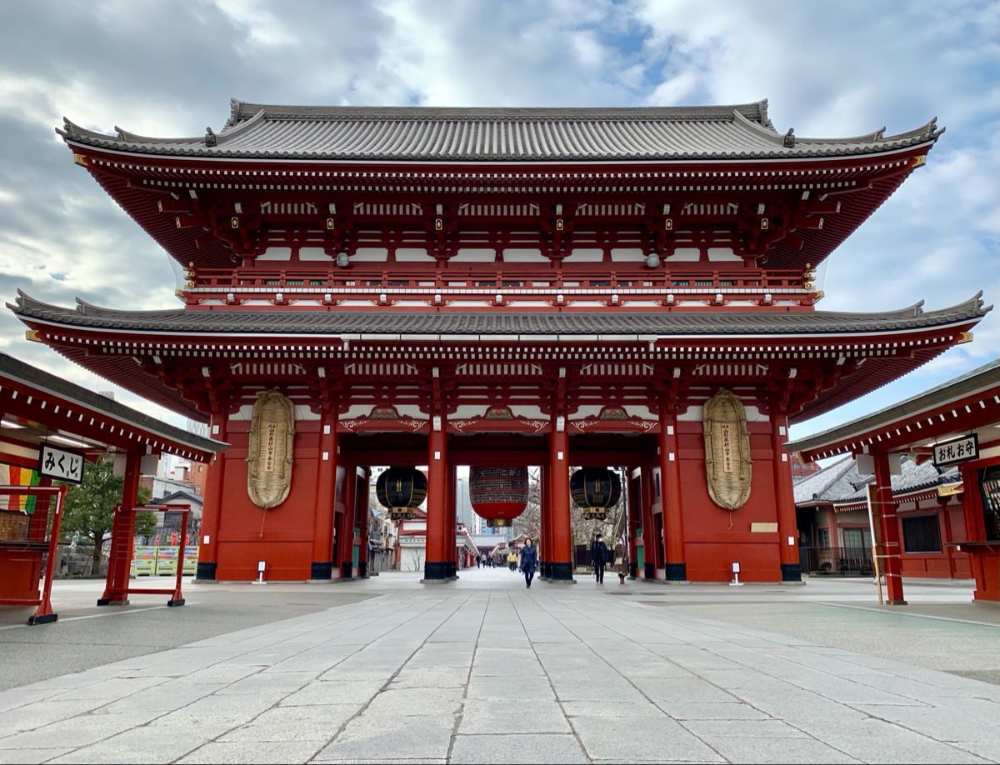
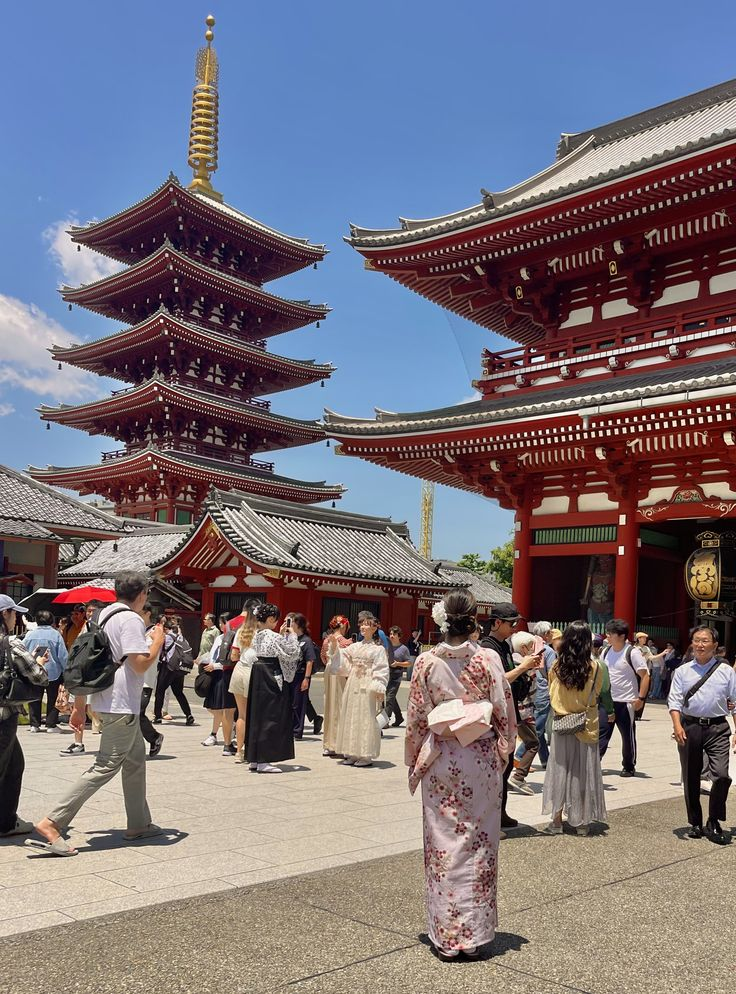
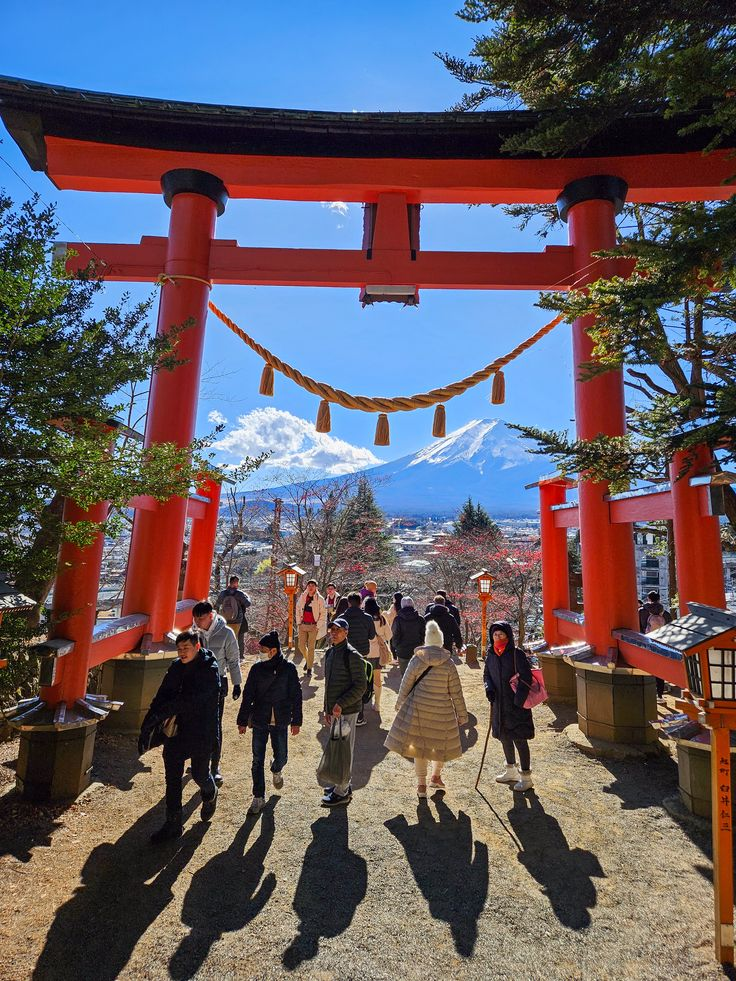
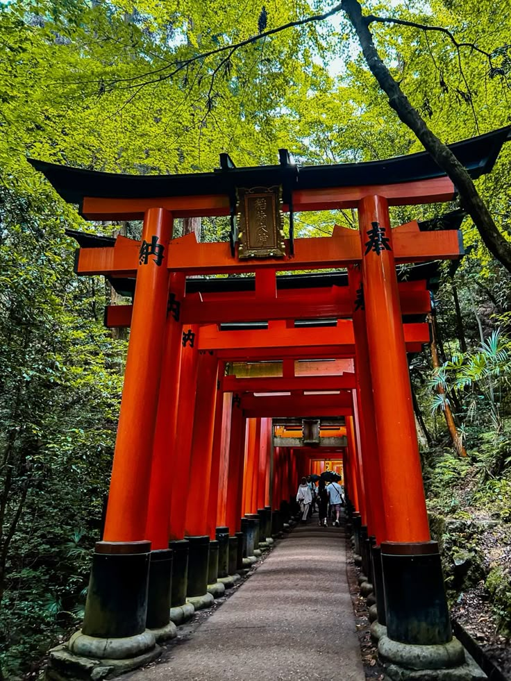

おすすめスポット
コミュニティが共有する魅力的な場所を発見しましょう。

リアルな体験
留学生や地元の人のリアルなレビューを読めます。

簡単にシェア
あなたのおすすめスポットを簡単に投稿できます。
あなたの旅の最高の瞬間をシェアしましょう
コミュニティが共有する魅力的な場所を発見しましょう。
留学生や地元の人のリアルなレビューを読めます。
あなたのおすすめスポットを簡単に投稿できます。


コミュニティから厳選された投稿
浅草寺（東京）




浅草寺は東京で最も有名な観光地の一つです。 雷門から続く仲見世通りでは、和菓子や伝統工芸品を楽しめます。 夜のライトアップも非常に美しく、昼とは違う魅力があります。
清水寺（京都）

清水寺は四季折々の景色が楽しめる名所です。 春の桜、秋の紅葉は特に人気で、 本堂の舞台からの景色は圧巻です。
道頓堀（大阪）

道頓堀は大阪グルメの中心地です。 たこ焼きやお好み焼きを楽しみながら、 夜のネオン街を歩くのがおすすめです。
青い池（北海道）

神秘的な青色が魅力の観光地。 天候によって色が変わるため、 何度訪れても新しい発見があります。
古宇利島（沖縄）

透明度の高い海と絶景ドライブが楽しめる島。 カップルや観光客に大人気のスポットです。
阿蘇山（熊本）


世界最大級のカルデラを持つ火山。 大自然のスケールを体感できる絶景スポットです。